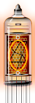

binary converter hexadecimal: 0x00 decimal: 0
Click the switches. Up is on, down is off.
The eight bits are translated to hexadecimal and decimal. The prefix "0x" in front of the hexadecimal helps programmers. They need to see the difference between '11' in hexadecimal and '11' in decimal. They aren't the same. '11' in hexadecimal translates to '17' in decimal. See for yourself by setting the switches to '00010001'.
These switches are an input device for entering a byte. The Nixie tubes are an output device for displaying the byte.